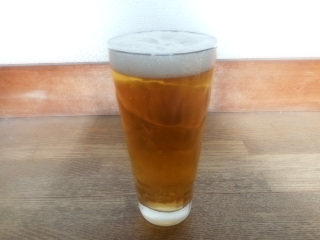

My favorite local foods and drinks
- Curry Rice
- What type of curry rice do you like?
Especialy very hot and spicy. I'm interested in trying a very, very hot curry in curry restaurants.
Although I sweat a lot, I feel so good.But one time, the curry which I oredered was too hot for me to eat half as much.
What type of topping do you like?
I love a Fried pork.Fried pork and curry are very good colaboration. And a row egg is also good! Then I'll mix row eggs and curry.
After that the curry rice will change to more mild taste.
What kind of place do you want to eat it?
In summer camps.Some times we cook curry in camps, and then the simple taste curry is very good!
We cook much curry by ourselves and eat with many friends.
So maybe it seems to be more delicious by synergistic effect.
Can you cook curry in your home?
Yes, sometimes I cook curry by myself in my home. It is easy by using commercially available curry roux.
- Ramen
- What type of Ramen do you like?
I like a beef taste noodle. We call it a cow bone ramen.
This type noodle is very rare. Generally it is popular to use pork, chiken, fish and vesitables.
What type of topping do you like?
I like much green onions. The compatibility of ramen and green onion is very good.
How much do you like hardness of noodles?
I like hardened noodles, and dislike soft noodles.
How situation do you eat a Ramen?
After drinking, sometimes I go to a ramen restaurant. Then I feel more dericious because I am drunk.
Sometimes I cook an instant ramen by myself. Then I put in an egg and been sprouts becouse of changing more helthy food.
- Beer

- What type of beer do you like?
I love a simple and clear taste beer, and I hope beer is cold and chilled.Then it should be freezed the cup too.
sometimes I drink a dark beer. The biter taste is good!
When do you drink beer?
Basically after working, I drink beer in my home or bars.
How do you feel after drinking?
I feel so good! When I’ｍ in a very good condition, I sing songs in front of people.
- Chiese
- What kinds of cheiese?
Especially I like Blue chiese.
In our community, chiese is a little expensive.So we can not eat blue chiese a lot.
One time, when we were drinking, we ordered a lot of blue chiese.
Then the chiese was left,so one girl took out the left blue chiese in her bag.
But after that the bag got a hard smell of blue chiese.